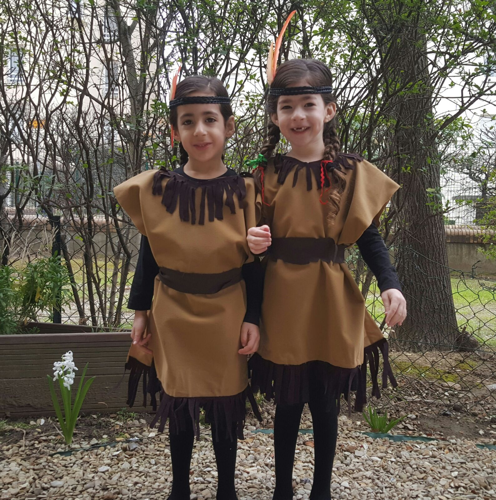

Adorable cousins!
Potius inflammat, ut coercendi magis quam dedocendi esse videantur. Stoicos roga. Eaedem res maneant alio modo. Nescio quo modo praetervolavit oratio. Ille incendat? Itaque sensibus rationem adiunxit et ratione effecta sensus non reliquit.

Purim by the Sebbags!
Te ipsum, dignissimum maioribus tuis, voluptasne induxit, ut adolescentulus eriperes P. Quis enim potest ea, quae probabilia videantur ei, non probare? Illud dico, ea, quae dicat, praeclare inter se cohaerere. Duarum enim vitarum nobis erunt instituta capienda. Nam de isto magna dissensio est. Itaque primos congressus copulationesque et consuetudinum instituendarum voluntates fieri propter voluptatem; Atque ab his initiis profecti omnium virtutum et originem et progressionem persecuti sunt. Quis animo aequo videt eum, quem inpure ac flagitiose putet vivere? Ergo id est convenienter naturae vivere, a natura discedere. Mihi quidem Antiochum, quem audis, satis belle videris attendere.
Qui-vere falsone, quaerere mittimus-dicitur oculis se privasse; Quid enim me prohiberet Epicureum esse, si probarem, quae ille diceret? Sin dicit obscurari quaedam nec apparere, quia valde parva sint, nos quoque concedimus; Ut necesse sit omnium rerum, quae natura vigeant, similem esse finem, non eundem. Itaque his sapiens semper vacabit. Suo enim quisque studio maxime ducitur. Potius ergo illa dicantur: turpe esse, viri non esse debilitari dolore, frangi, succumbere.